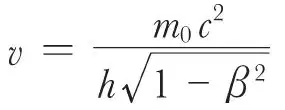
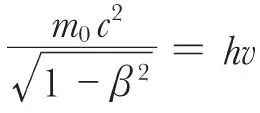

中文
中文L. de Broglie
Editor’s Note
By 1923, physicists were facing up to the implications of Planck’s and Einstein’s discoveries about the quantized nature of light. Although a wave phenomenon, light also seemed particulate. Bohr’s model of the atom had exploited the quantization principle for electrons. Here Louis de Broglie suggests that particles with mass, such as electrons, may also have associated waves, and that this idea could put Bohr’s view on firmer ground. De Broglie says that Bohr’s results can be obtained by demanding that an integral number of such electron waves must fit into its orbit around the nucleus. De Broglie’s suggestion was confirmed in dramatic fashion by the discovery in 1927 of electron diffraction by crystals. 中文
THE quantum relation, energy = h × frequency, leads one to associate a periodical phenomenon with any isolated portion of matter or energy. An observer bound to the portion of matter will associate with it a frequency determined by its internal energy, namely, by its “mass at rest.” An observer for whom a portion of matter is in steady motion with velocity βc, will see this frequency lower in consequence of the Lorentz-Einstein time transformation. I have been able to show (Comptes rendus, September 10 and 24, of the Paris Academy of Sciences) that the fixed observer will constantly see the internal periodical phenomenon in phase with a wave the frequency of which

is determined by the quantum relation using the whole energy of the moving body—provided it is assumed that the wave spreads with the velocity c/β. This wave, the velocity of which is greater than c, cannot carry energy. 中文
A radiation of frequency v has to be considered as divided into atoms of light of very small internal mass (<10–50 gm) which move with a velocity very nearly equal to c given by

. The atom of light slides slowly upon the non-material wave the frequency of which is v and velocity c/β, very little higher than c. 中文
The “phase wave” has a very great importance in determining the motion of any moving body, and I have been able to show that the stability conditions of the trajectories in Bohr’s atom express that the wave is tuned with the length of the closed path. 中文
The path of a luminous atom is no longer straight when this atom crosses a narrow opening; that is, diffraction. It is then necessary to give up the inertia principle, and we must suppose that any moving body follows always the ray of its “phase wave”; its path will then bend by passing through a sufficiently small aperture. Dynamics must undergo the same evolution that optics has undergone when undulations took the place of purely geometrical optics. Hypotheses based upon those of the wave theory allowed us to explain interferences and diffraction fringes. By means of these new ideas, it will probably be possible to reconcile also diffusion and dispersion with the discontinuity of light, and to solve almost all the problems brought up by quanta. 中文
(112, 540; 1923)
Louis de Broglie: Paris, September 12.